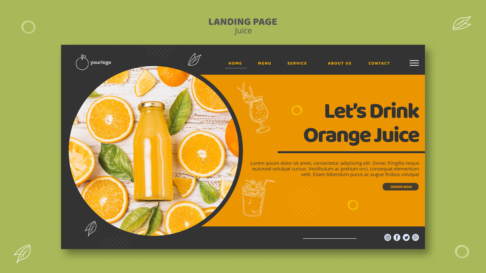

Cold Pressed
Preserves flavor and nutrients by using gentle extraction instead of heat-intensive processing.
Freshly Pressed Daily
Crafted from hand-picked oranges with no concentrates, no shortcuts, and no artificial flavor. Just bright, bold citrus energy.

Preserves flavor and nutrients by using gentle extraction instead of heat-intensive processing.
Every bottle can be traced to partner orchards and harvest windows for peak sweetness.
Mixed and bottled in short runs to keep freshness high and waste low.
From Grove to Glass
Our oranges are harvested at dawn and pressed by midday. That quick cycle captures peak flavor and keeps each batch vivid, fragrant, and naturally full-bodied.
"The first sip tastes like opening a fresh orange under summer sun."
Customer Review